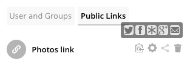

File Sharing¶
ownCloud users can :
- Share files with their ownCloud groups and other users on the same ownCloud server
- Share files with ownCloud users on other ownCloud servers
- Create public shares for people who are not ownCloud users.
You have control of a number of user permissions on file shares:
- Allow users to share files
- Allow users to create public shares
- Require a password on public shares
- Allow public uploads to public shares
- Require an expiration date on public share links
- Allow resharing
- Restrict sharing to group members only
- Allow email notifications of new public shares
- Exclude groups from creating shares
Note
ownCloud Enterprise includes a Share Link Password Policy app; see Password Policy.
Configure your sharing policy on your Admin page in the Sharing section.

Check
Allow apps to use the Share APIto enable users to share files. If this is not checked, no users can create file shares.Check
Allow users to share via linkto enable creating public shares for people who are not ownCloud users via hyperlink.Check
Enforce password protectionto force users to set a password on all public share links. This does not apply to local user and group shares.Check
Allow public uploadsto allow anyone to upload files to public shares.Check
Allow users to send mail notification for shared filesto enable sending notifications from ownCloud. (Your ownCloud server must be configured to send mail)Check
Allow users to share file via social mediato enable displaying of a set of links that allow for quickly sharing files and share links via Twitter, Facebook, Google+, Disaspora, and email.Check
Set default expiration dateto set a default expiration date on public shares.Check
Allow resharingto enable users to re-share files shared with them.Check
Restrict users to only share with users in their groupsto confine sharing within group memberships.Note
This setting does not apply to the Federated Cloud sharing feature. If Federated Cloud Sharing is enabled, users can still share items with any users on any instances (including the one they are on) via a remote share.
Check
Allow users to send mail notification for shared filesenables users to send an email notification to every ownCloud user that the file is shared with.Check
Exclude groups from sharingto prevent members of specific groups from creating any file shares in those groups. When you check this, you’ll get a dropdown list of all your groups to choose from. Members of excluded groups can still receive shares, but not create anyCheck
Allow username autocompletion in share dialogto enable auto-completion of ownCloud usernames.Check
Restrict enumeration to group membersto restrict auto-completion of ownCloud usernames to only those users who are members of the same group(s) that the user is in.
Note
ownCloud does not preserve the mtime (modification time) of directories, though it does update the mtimes on files. See Wrong folder date when syncing for discussion of this.
Transferring Files to Another User¶
You may transfer files from one user to another with occ.
The command transfers either all or a limited set of files from one user to another.
It also transfers the shares and metadata info associated with those files (shares, tags, and comments, etc).
This is useful when you have to transfer a user’s files to another user before you delete them.
Important
Trashbin contents are not transferred.
Here is an example of how to transfer all files from one user to another.
occ files:transfer-ownership <source-user> <destination-user>
Here is an example of how to transfer a limited group a single folder from one user to another.
In it, folder/to/move, and any file and folder inside it will be moved to <destination-user>.
sudo -u www-data php occ files:transfer-ownership --path="folder/to/move" <source-user> <destination-user>
When using this command keep two things in mind:
- The directory provided to the
--pathswitch must exist insidedata/<source-user>/files. - The directory (and its contents) won’t be moved as is between the users. It’ll be moved inside the destination user’s
filesdirectory, and placed in a directory which follows the format:transferred from <source-user> on <timestamp>. Using the example above, it will be stored under:data/<destination-user>/files/transferred from <source-user> on 20170426_124510/
(See Using the occ Command for a complete occ
reference.)